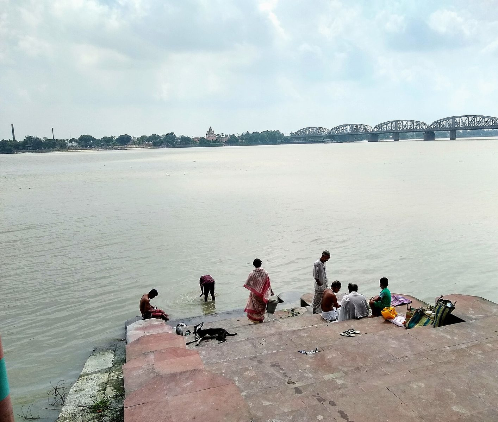
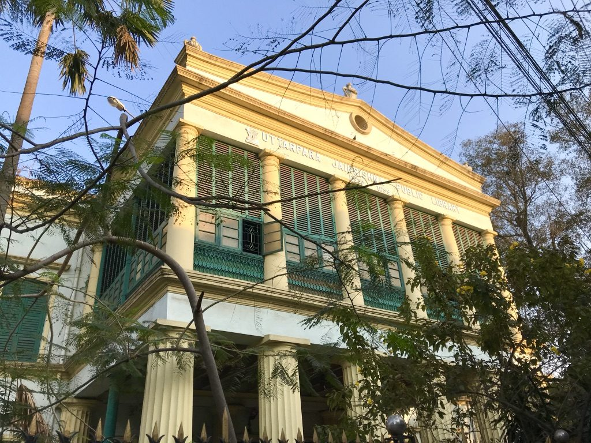
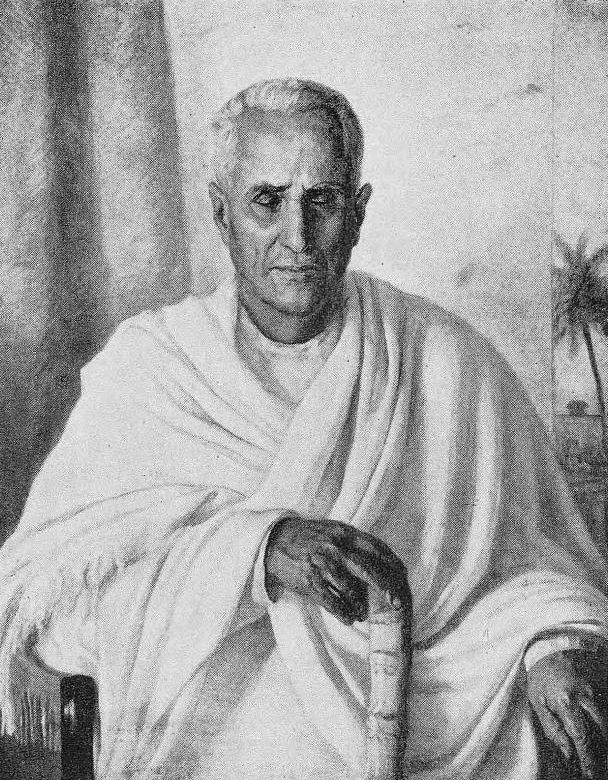
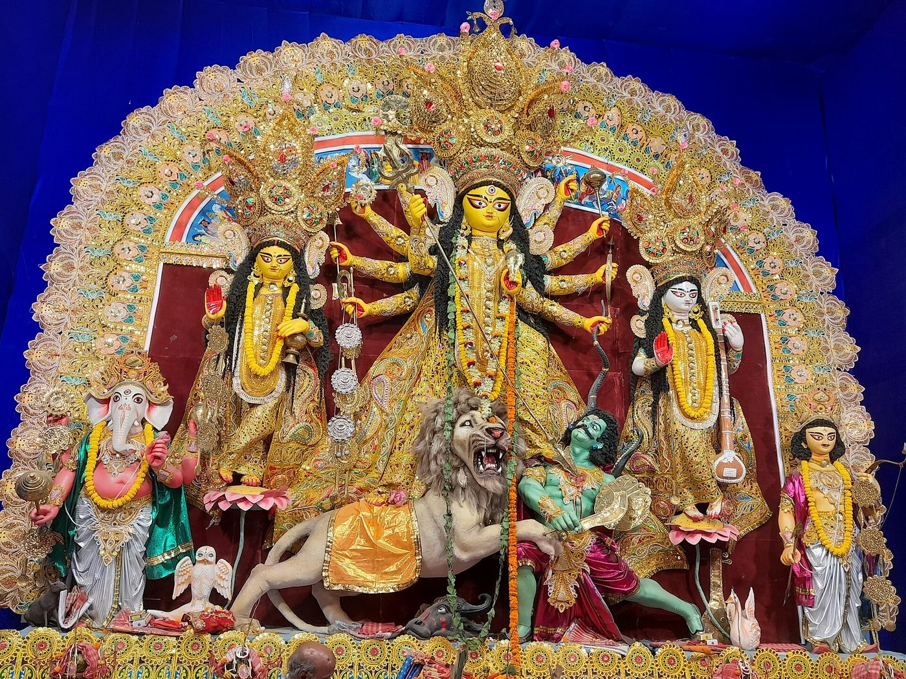
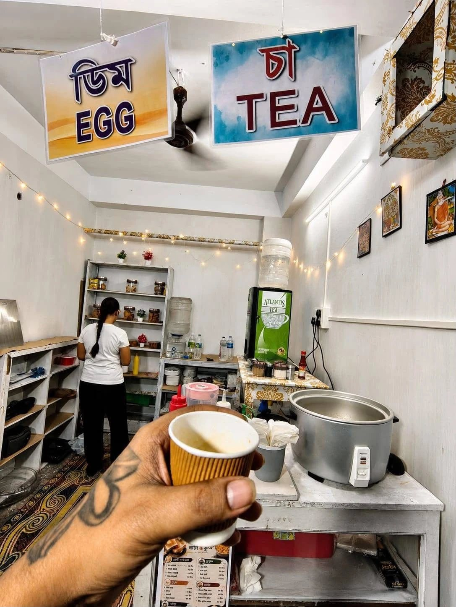

হুগলির পশ্চিম পাড় The west bank of the Hooghly
উত্তরপাড়া
Uttarpara
কলকাতা থেকে দশ কিলোমিটার উত্তরে, গঙ্গার এই পাড়ে একটা ছোট শহর — যার ইতিহাস তার আয়তনের তুলনায় অনেকটাই বড়। এখানে স্কুল তৈরি হয়েছিল পৌরসভার আগে, আর লাইব্রেরির দরজায় কোনওদিন টিকিট লাগেনি।
Ten kilometres north of Kolkata, on this side of the river, stands a town whose history runs a good deal longer than its four-and-a-half square miles. The school here is older than the town council, and nobody has ever needed a ticket to get into the library.
উত্তরপাড়া, আধ মিনিটে Uttarpara in thirty seconds
- ১৭০৪1704 জলা জমিতে প্রথম বসত first settled, on marshland
- ১৮৪৬1846 স্কুল — চাঁদা তুলে a school, paid for by subscription
- ১৮৫৩1853 রাজ্যের প্রাচীনতম পৌরসভা West Bengal's oldest municipality
- ১৮৫৯1859 বিনা পয়সার গণগ্রন্থাগার a free public library
দক্ষিণেশ্বর ঠিক উল্টো পাড়ে। জিটি রোড শহরের ভিতর দিয়ে। হাওড়া–বর্ধমান লাইনে স্টেশন। আর এই দোকান, ১৮ নম্বর ওয়ার্ডে, লাইব্রেরি থেকে হাঁটা পথে।
Dakshineswar is directly across the water. The Grand Trunk Road runs through the middle. The station is on the Howrah–Bardhaman line. And this shop is in ward 18, a walk from the library.
নদীর মতো বয়ে যাওয়াFollowing the river
যে ক্রমে শহরটা তৈরি হল
The order things were built in
একটা শহরের চরিত্র বোঝা যায় সে কী আগে বানিয়েছে তা দেখে। এখানে সেতু এল প্রথমে, তারপর স্কুল, তারপর হাসপাতাল — পৌরসভা তারও পরে, আর লাইব্রেরি সবার শেষে। প্রতিষ্ঠান আগে, প্রশাসন পরে।
You can read a town by the order it built things in. Here it went bridge, school, hospital — and only then a municipality, and only then the library. The institutions came before the administration.

১৫ এপ্রিল ১৮৫৯15 April 1859
যে বাড়িতে বই সবার
The house where the books belonged to everyone
জয়কৃষ্ণ মুখোপাধ্যায় ১৮৫৬ সালে জিটি রোডের ধারে এক একর জমিতে কাজ শুরু করেন। খরচ পড়ে পঁচাশি হাজার টাকা — তখনকার হিসেবে বিপুল। ১৮৫৯-এর ১৫ এপ্রিল দরজা খুলল, তাকে উঠল তাঁরই নিজের তিন হাজার বই। ছ’বছর পরে সেখানে ইংরেজি বই বারো হাজার, বাংলা ও সংস্কৃত আড়াই হাজার।
Jaykrishna Mukherjee began building in 1856, on an acre beside the Grand Trunk Road, and spent ₹85,000 on it — an enormous sum then. The doors opened on 15 April 1859 and the shelves held three thousand books out of his own house. Six years later there were twelve thousand in English and two and a half thousand in Bengali and Sanskrit.
‘ভারতের প্রথম বিনামূল্যের গণগ্রন্থাগার’ — কথাটা এই পাতার নিজের নয়। পশ্চিমবঙ্গ হেরিটেজ কমিশন তাদের তালিকায় ঠিক এই ভাষাতেই লিখেছে, বিজ্ঞপ্তির তারিখ ১৭ জানুয়ারি ২০০৮। উইকিপিডিয়া আরও এক ধাপ এগিয়ে বলে ‘হয়তো এশিয়াতেও প্রথম’ — ‘হয়তো’ শব্দটা সমেত। তর্কটা থাক তর্কের জায়গায়; যেটা নিয়ে কারও দ্বিমত নেই সেটা হল, ১৮৫৯ সালে একটা ছোট শহরে যে কেউ ঢুকে বই পড়তে পারত, বিনা পয়সায়।
“The first free public library in India” is not this page's phrase. It is the wording the West Bengal Heritage Commission uses in its own listing, notified on 17 January 2008. Wikipedia goes a step further and says “and perhaps in Asia as well” — with the “perhaps” left in. Let the superlative stay arguable. What is not arguable is that in 1859, in a small town, anyone could walk in and read, and it cost them nothing.
- ১৮৬৬1866 ঈশ্বরচন্দ্র বিদ্যাসাগর ও মেরি কার্পেন্টার আসেন Vidyasagar and Mary Carpenter visit
- ১৮৬৯, ১৮৭৩1869, 1873 মাইকেল মধুসূদন দত্ত এখানে থাকেন Michael Madhusudan Dutt stays here
- ১৯০৯1909 চত্বরে শ্রীঅরবিন্দের বক্তৃতা Sri Aurobindo speaks in the courtyard
- আজToday প্রায় ৪৫,০০০ দুষ্প্রাপ্য বই, ৪৫০ পুঁথি some 45,000 rare books, 450 manuscripts
উত্তরপাড়া বক্তৃতা
The Uttarpara Speech
আলিপুর বোমার মামলায় এক বছর জেল খেটে বেরিয়েছেন শ্রীঅরবিন্দ। ১৯০৯-এর ৩০ মে, সনাতন ধর্ম রক্ষিণী সভার ডাকে, তিনি এলেন উত্তরপাড়ায় — নিয়ে এলেন এখানকারই ছেলে, বিপ্লবী অমরেন্দ্রনাথ চট্টোপাধ্যায়। লাইব্রেরির গঙ্গার দিকের খোলা চত্বরে হাজার দশেক লোক। তিনি নিচু গলায় বললেন; লেখা আছে, কেউ শব্দ করেনি।
A year in a British jail on the Alipore Bomb Case, and newly out. On 30 May 1909 Sri Aurobindo came to Uttarpara at the invitation of the Sanatana Dharma Rakshini Sabha — fetched from Calcutta by Amarendranath Chatterjee, a son of this town. Ten thousand people in the open courtyard on the river side of the library. He spoke quietly, and the accounts all say nobody made a sound.
এই প্রথম তিনি প্রকাশ্যে নিজের সাধনার কথা বললেন, আর রাজনীতিতে এটাই প্রায় তাঁর শেষ কথা। পরের ফেব্রুয়ারিতে তিনি পন্ডিচেরি চলে যান। ১৯৭২-এ চত্বরে একটা মার্বেল ফলক বসেছে।
It was the first time he spoke in public of his own inner life, and very nearly the last thing he said in politics; he left for Pondicherry the following February. A marble plaque went up on the grounds in 1972.

১৮০৮ – ১৮৮৮1808 – 1888
জয়কৃষ্ণ মুখোপাধ্যায়
Jaykrishna Mukherjee
কেরানির ছেলে। ১৮৩০-এ হুগলির রাজস্ব দপ্তরে নথি রাখার কাজে ঢোকেন, ১৮৩৫-এ চাকরি ছেড়ে জমিদারি শুরু করেন। তারপর যা করলেন সেটা জমিদারের চেনা কাজ নয় — তিনি বাড়ি বানাননি শুধু, প্রতিষ্ঠান বানিয়েছেন। আর বেশ কয়েকবার নিজের বাড়িই দান করে দিয়েছেন, যাতে তার ভাড়ায় প্রতিষ্ঠানটা চলে।
A clerk's son. He took a job keeping records for the Hooghly land revenue office in 1830, left it in 1835, and became a zamindar. What he did next is not what zamindars are remembered for. He did not only put up buildings; he put up institutions — and more than once handed over one of his own houses so its rent would keep an institution running.
- উত্তরপাড়ার স্কুল, হাসপাতাল, লাইব্রেরি ও কলেজ The school, the hospital, the library and the college
- মোট একত্রিশটি স্কুলের খরচ চালাতেন Thirty-one schools funded in all
- বেথুন কলেজে ১০,০০০ টাকা; কলকাতা বিশ্ববিদ্যালয়ের লাইব্রেরিতে ৫,০০০ ₹10,000 to Bethune College; ₹5,000 to a University of Calcutta library
- বিদ্যাসাগরের বিধবাবিবাহ আবেদনে প্রথম স্বাক্ষর First signature on Vidyasagar's widow-remarriage petition
- ব্রিটিশ ইন্ডিয়ান অ্যাসোসিয়েশনের অন্যতম প্রতিষ্ঠাতা One of the founders of the British Indian Association
১৮৫১-তে পৌরসভার প্রথম আবেদন নাকচ হয়। তিনি আবার আবেদন করেন। ১৮৫৩-য় সেটা মঞ্জুর হল — কলকাতা পৌর সংস্থার তেইশ বছর আগে।
The first petition for a municipality was refused in 1851. He filed again. It was granted in 1853 — twenty-three years before Calcutta got its corporation.
যাঁরা এসেছেন, যাঁরা ছিলেনWho came, and who stayed
যাঁরা এই পথ দিয়ে গিয়েছেন
People who passed through
একটা ছোট শহর সহজেই বলে ফেলতে পারে যে অমুক তমুক ‘এখানকার মানুষ’। এই পাতা সেটা করে না। কে এখানকার, কে থেকে গিয়েছিলেন কিছুদিন, আর কে শুধু এসেছিলেন — নীচে তিনটে আলাদা করে লেখা আছে। সত্যিটাই যথেষ্ট চমকপ্রদ।
It costs a small town nothing to let a famous visitor blur into a famous resident. This page keeps them apart: who was of the town, who stayed a while, and who simply came. The true version is remarkable enough without help.
স্কুল, কলেজ, লাইব্রেরিSchools, a college, a library
যে শহর তাড়াতাড়ি পড়তে শিখেছিল
A town that learned early
উত্তরপাড়া শুধু বাড়ি তোলেনি, প্রতিষ্ঠান তুলেছে। আর সেগুলো তুলেছে এমন এক সময়ে যখন তার দরকার ছিল না — জলা জমিতে গড়ে ওঠা একটা গ্রামের ইংরেজি স্কুল লাগে না, বিনা পয়সার লাইব্রেরি তো নয়ই। তবু হয়েছিল, আর একবার হয়ে যাওয়ার পর প্রজন্মের পর প্রজন্ম ওগুলোর ভিতর দিয়েই গিয়েছে।
Uttarpara did not only build houses. It built institutions, and it built them at a point when nothing obliged it to — a village on reclaimed marsh does not need an English school, and it certainly does not need a free library. It got both anyway, and once they existed, generation after generation went through them.
ইট, চুন, সিঁড়িBrick, lime, steps
যা দাঁড়িয়ে আছে
What is still standing
জিটি রোড থেকে গঙ্গার দিকে নামতে থাকলে পুরনো বাড়ি, মন্দিরের চূড়া আর ঘাটের সিঁড়ি — একটার পর একটা। কোনওটাই ঘেরা নয়, টিকিটও লাগে না। রোজকার রাস্তার মধ্যেই দাঁড়িয়ে আছে, রোজকার জিনিস হয়ে।
Walk from the Grand Trunk Road down towards the water and you pass old houses, temple towers and the steps of the ghats, one after another. None of it is fenced off and none of it charges. It stands in the ordinary street, being ordinary.
আজকের উত্তরপাড়াUttarpara today
শহরটা জাদুঘর নয়
The town is not a museum
দেড় লাখ লোকের শহর, সাক্ষরতা নব্বই শতাংশের উপরে। সকালে হাওড়ার লোকাল ধরার ভিড়, জিটি রোডে টোটো, বাজারে মাছের দর নিয়ে তর্ক। হিন্দমোটরের কারখানা ২০১৪-য় বন্ধ হয়েছে, কিন্তু তার পাশেই এখন মেট্রোর কামরা তৈরি হয়। আর পুজোর সময় সি. এ. মাঠের ঠাকুর দেখতে গোটা শহর হাঁটে।
A hundred and fifty thousand people, and literacy over ninety per cent. The morning crush for the Howrah local, totos on the Grand Trunk Road, an argument about the price of fish. The Hindmotor plant shut in 2014, and metro coaches are built next to where it stood. At puja the whole town walks to the C. A. Math pandal.
আর ব্যানার্জি পাড়া স্ট্রিটে সকাল ন’টায় একটা স্টিমার বসে, আর রাত ন’টা পর্যন্ত নামে না।
And on Banerjee Para Street a steamer goes on at nine in the morning and does not come off until nine at night.


১৮৪৬-এ এই শহরের লোকে চাঁদা তুলে একটা স্কুল বানিয়েছিল। ১৮৫৯-এ একজন তাঁর নিজের বইগুলো তাকে তুলে দরজা খুলে দিয়েছিলেন সবার জন্য। সেই তুলনায় একটা চায়ের দোকান কিছুই নয়, আর আমরা সেটা জানি।
In 1846 the people of this town put their own money together for a school. In 1859 one of them put his own books on a shelf and opened the door to anybody. Set against that, a tea shop is nothing, and we know it.
তবু, যে জায়গা এতদিন ধরে অন্যের ভাবনার জন্য জায়গা করে দিয়ে এসেছে, সেখানে নিজের ছোট জিনিসটা শুরু করা সহজ। আমরা দুই বোন এখানে মোমো বানাই আর চা করি। স্কুলের ছুটির ঘণ্টা পড়লে ভিড় হয়। ওইটুকুই।
Still — a place that has been making room for other people's ideas this long is an easy place to start a small thing of your own. Two sisters make momos here and brew tea. When the school bell goes there is a queue. That is the whole of it.
আরও পড়ুনRead further
উত্তরপাড়া ঘুরে দেখুন
Explore Uttarpara
এই পাতার তথ্য যেখান থেকে এসেছে, সেগুলোই নীচে। কোনওটা সরাসরি এখানে খুলবে, কোনওটা খুলবে না — যে সাইট নিজেকে অন্য পাতার ভিতরে দেখাতে দেয় না, তার সিদ্ধান্ত আমরা ঘুরিয়ে দিই না। সে ক্ষেত্রে এখানে একটা সংক্ষিপ্ত পরিচয় আর মূল সাইটে যাওয়ার লিঙ্ক থাকবে।
These are the sources this page was built from. Some open here, some do not — where a site has decided not to be shown inside another page, that decision stands. In that case you get a short introduction and a link to the real thing.
সূত্র
Sources
এই পাতার প্রতিটি তারিখ, নাম আর সংখ্যা নীচের কোনও না কোনও সূত্র থেকে নেওয়া। যেখানে সূত্রে সূত্রে মিল নেই, সেখানে পাতাটা সেটা বলে দিয়েছে।
Every date, name and figure on this page comes from one of these. Where the sources disagree, the page says so rather than quietly picking one.